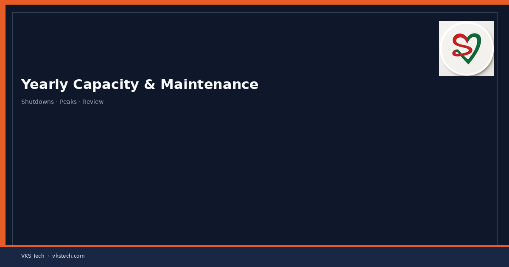
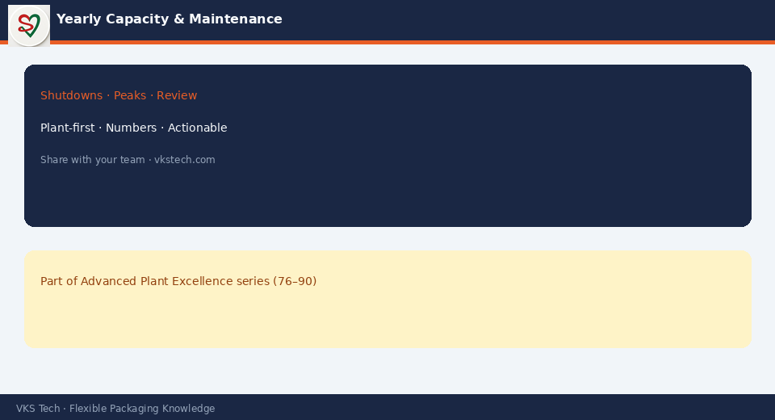

📅 A Yearly Capacity & Maintenance Plan That Links Shutdowns, Upgrades and Demand Prevents Last-Minute Capacity Crises
📖 12-min read · Capacity Planning · PPC + Plant Heads + Maintenance
Most converting plants plan capacity month by month and treat major maintenance as something that “will be fitted in”. The result is predictable: a sudden major overhaul coincides with peak demand, a key machine is down longer than expected, or an upgrade is delayed because no one protected the window. A simple yearly capacity-and-maintenance plan removes most of this chaos.
This article shows how to build a practical one-page (or one-spreadsheet) plan that links expected demand, major shutdowns, upgrades and realistic available capacity.
- Start from realistic monthly demand (not hope)
- Block known major maintenance and upgrade windows first
- Calculate available machine-days / MT after those blocks
- Flag months where demand exceeds available capacity early
- Review the plan every quarter and after any major change

1. What the Yearly Plan Must Contain
| Element | Why it belongs in the plan |
|---|---|
| Expected demand by month (MT or machine-hours) | Gives the target the plant must meet |
| Major planned shutdowns / overhauls | These remove capacity permanently for those days |
| Upgrade or installation windows | New equipment or process changes need protected time |
| Public holidays / known low-attendance periods | Affects real available shifts |
| Realistic available capacity after losses | After changeovers, efficiency, quality loss |
| Gap / surplus by month | Shows where action is needed early |
2. How to Build It (Simple Method)
- Demand side — Take last year’s actuals + known new business + expected growth/loss. Split by month. Do not use the most optimistic sales number.
- Block the calendar — Put major maintenance, cylinder changes, laminator overhauls, and any planned installations on the calendar first. Protect those windows.
- Calculate available days — Working days − holidays − planned downtime. Apply realistic overall efficiency (from your own history, not brochure speed).
- Convert to MT or machine-hours — Use the same method you use for monthly capacity (speed × width × micron × density × efficiency).
- Compare — Demand vs available capacity month by month. Highlight months that are tight or negative.
- Actions — For tight months: advance work, outsource, add temporary shifts, or push non-critical maintenance. For surplus months: pull work forward or schedule training/trials.
3. Who Owns What
- PPC / Planning — Owns the demand and capacity numbers, updates the plan, flags gaps.
- Maintenance — Owns the shutdown and upgrade windows; must not move them without agreement.
- Production / Plant Head — Signs off the final plan and the actions for tight months.
- Sales / Commercial — Must see the plan so they do not promise volume in already full months.
4. Living the Plan
A yearly plan that is made once in April and never opened again is useless. Good practice:
- Review at the start of every quarter
- Re-open after any major new order, lost business, or change in machine availability
- Use the plan in the monthly capacity meeting so everyone sees the same picture
- Keep the latest version in a shared location with a clear “last updated” date
A one-page yearly view that links demand, maintenance and available capacity is one of the highest-leverage tools a converting plant can have. It turns last-minute crises into decisions made months in advance.
📅 वार्षिक क्षमता और मेंटेनेंस प्लान जो शटडाउन, अपग्रेड और डिमांड को जोड़ता है, आखिरी पल की क्षमता संकट को रोकता है
📖 12-मिनट पढ़ें · कैपेसिटी प्लानिंग · PPC + प्लांट हेड्स + मेंटेनेंस
ज्यादातर कन्वर्टिंग प्लांट क्षमता महीने-दर-महीने प्लान करते हैं और बड़े मेंटेनेंस को “जब जगह मिलेगी तब” मानते हैं। नतीजा तय है: बड़ा ओवरहॉल पीक डिमांड के साथ टकराता है, मशीन अपेक्षा से ज्यादा दिन बंद रहती है, या अपग्रेड इसलिए टल जाता है क्योंकि कोई विंडो सुरक्षित नहीं रखी गई। एक सरल वार्षिक क्षमता-और-मेंटेनेंस प्लान इस अराजकता का बड़ा हिस्सा हटा देता है।
- वास्तविक मासिक डिमांड से शुरू करें (आशा से नहीं)
- ज्ञात बड़े मेंटेनेंस और अपग्रेड विंडो पहले ब्लॉक करें
- उन ब्लॉक्स के बाद उपलब्ध मशीन-दिन / MT निकालें
- जिन महीनों में डिमांड उपलब्ध क्षमता से ज्यादा हो, उन्हें जल्दी चिन्हित करें
- हर तिमाही और किसी बड़े बदलाव के बाद प्लान की समीक्षा करें